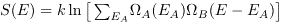
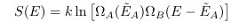

is the probable value of EA; that is, the value of EA for which S(EA) is a maximum.
is the probable value of EA; that is, the value of EA for which S(EA) is a maximum.Introduction
A simple calculation of the entropy of two Einstein solids that can exchange energy. The plot shows the entropy of the two systems, SA (blue curve) and SB (green curve), and the entropy S (red curve) of the composite system. NA and NB are the number of particles in each system. The total energy is given by E = EA + EB.
The entropy is computed by using the binomial coefficients to determine the number of states as a function of energy. In each case the entropy is plotted versus EA, the energy of system A. The entropy of system A is given by
S(EA) = k ln Ω(EA),
where ΩA(EA) is the number of microstates of system A with energy EA and k is Boltzmann's constant. We will choose units such that k = 1. The entropy of system B is given by a similar expression. The entropy of the composite system is given by
S(EA) = k ln [ΩA(EA) ΩB(EB)] = SA + SB.
The total entropy of the system is given by
.
We will see that as the total number of particles increases, the total entropy can be approximated by
,
where is the probable value of EA; that is, the value of EA for which S(EA) is a maximum.
Problems
Java Classes
Updated 27 February 2007.